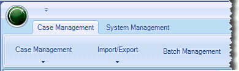
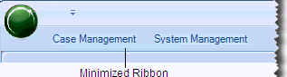
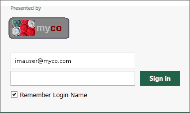

After creating the Eclipse administrator (see Define a Primary System Administrator), take a tour of Eclipse Administration interface as follows:
From the Windows desktop, choose Start > All Programs > IPRO Tech > IPRO Eclipse > Administration.
Enter the Eclipse administrator’s username and password.
Review the features of Eclipse Administration; refer to the following topics as needed.
The Eclipse Administration workspace is the main working area of Eclipse Administration. Based on the activity you choose, the workspace will include a main screen (such as the Create Case screen), and optionally multiple tabs that contain all of the tasks needed to complete the activity. The following example shows a portion of the Step 2 tab of the Create Case window.
Some tasks require multiple actions that are separated logically into multiple tabs in the workspace. Note that:
The multiple tabs contain the various tasks you need to complete in order to complete a particular task, such as creating a new case.
Your entries on a particular tab remain in effect until the task is completed. If you close Eclipse Administration before completing a particular task, your entries on the tabs will be lost.
For example, creating a case includes seven distinct steps, presented on separate tabs. If you close Eclipse Administration before you complete all seven tabs, your work will be lost.
The status bar at the bottom of the workspace includes Eclipse version information as well as other status information (for example, the location of the database in which you are working).
Once you start Eclipse Administration, the working session typically remains active as long as you work in the application.
The administration session could be lost for various reasons. If this occurs, a message in the Administration status bar will alert you to the situation.
|
|
The Eclipse button in the upper left corner of Eclipse Administration includes the following commands. Simply click the Eclipse button to access the commands.
|
The Quick Access Toolbar provides easy access to commonly used commands, or a specific case(s). This toolbar can be customized to meet your needs at any time.
The easy way to add a command is to right-click the desired ribbon or menu command and select Add to Quick Access Toolbar. The command will be added to the right side of the toolbar.
To add commands to the Quick Access toolbar:
Plan your Quick Access toolbar. Commands will be ordered from left to right as they are added.
Click the toolbar’s down arrow, which is located to the right of the Eclipse button.
Select Customize Quick Access Toolbar.
Select the type of commands to add from the Choose commands from list.
In the left column, select the command and click Add >>.
Repeat steps 4 and 5 for each command to be added. Scroll to see all commands in the left column.
Select (or clear) the Place Quick Access Toolbar below the Ribbon option.
When finished, click OK.
The easy way to remove a single item from the toolbar is to right-click the item on the toolbar and select Remove from Quick Access Toolbar.
To remove several commands:
Click the toolbar’s down arrow (located to the right of the Eclipse button) and select Customize Quick Access Toolbar.
In the right column, click a command and then click Remove.
Repeat step 3 for each command to be removed.
When finished, click OK.
To change the location of the Quick Access toolbar, click the toolbar’s down arrow (shown on the right) and select Place Quick Access Toolbar below the Ribbon (or above the Ribbon if you have previously moved it).
The Case Management and System Management ribbons in Eclipse Administration allow you to quickly find the commands that you need to complete a task. Commands are organized in logical groups:

To increase the size of the workspace, click the down arrow on the Quick Access toolbar and select Minimize the Ribbon. The ribbon bar collapses.

To access commands on a minimized ribbon, click the ribbon name. The ribbon will expand and remain expanded until you select a command or click in the workspace, in which case it will collapse again.
A custom graphic can be added to the Eclipse log-in page under the Presented by label, as shown in the following figure.

If you would like to change the graphic after installation,
contact